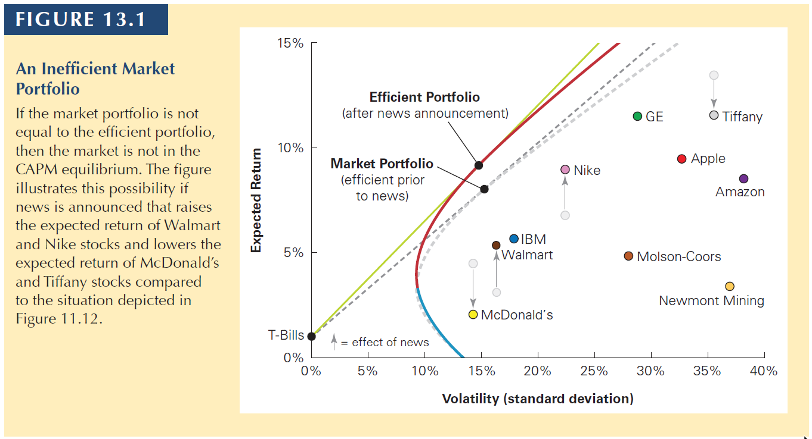
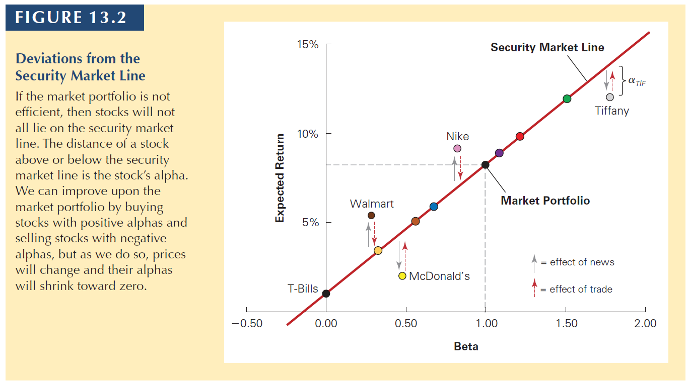
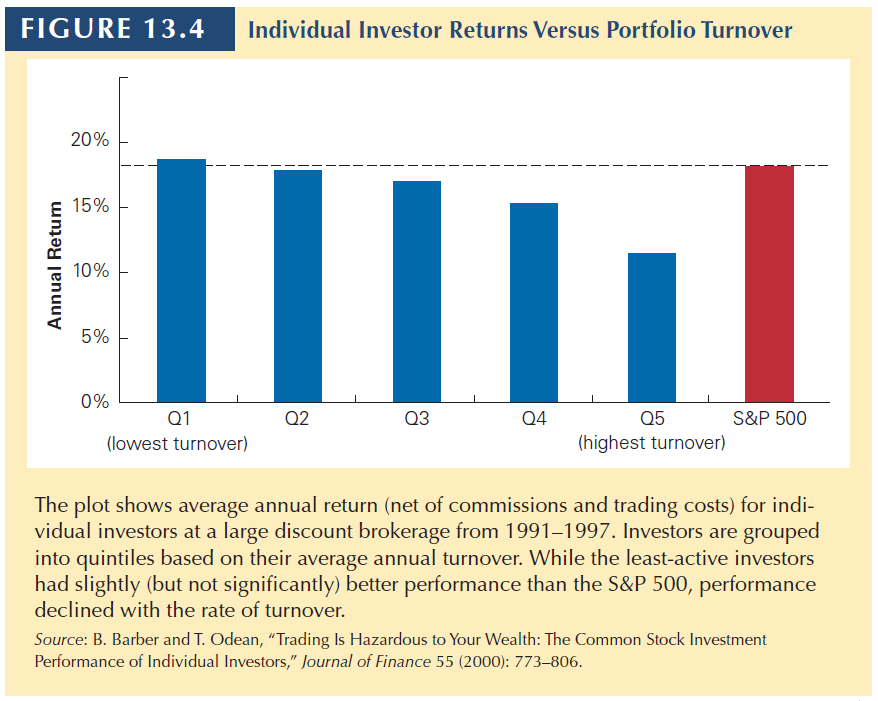
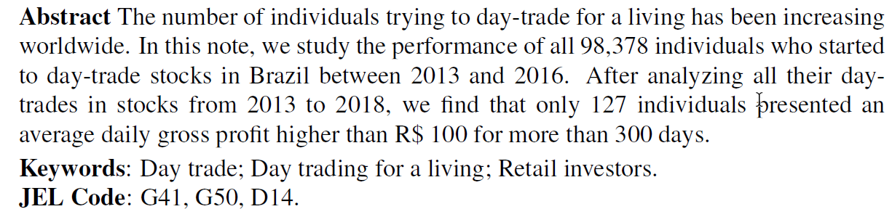
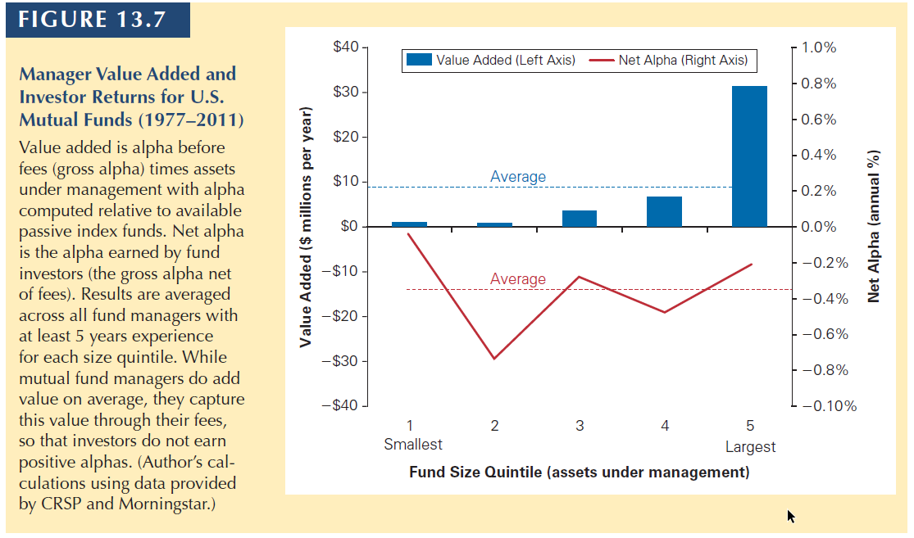

Estratégia Financeira
Part 5 - ch.13 Investor Behavior and Capital Market Efficiency

26-03-2025
Chapter Outline
13.1 Competition and Capital Markets
13.2 Information and Rational Expectations
13.3 The Behavior of Individual Investors
13.4 Systematic Trading Biases
13.5 The Efficiency of the Market Portfolio
13.6 Style-Based Techniques and the Market Efficiency Debate
13.7 Multifactor Models of Risk
13.8 Methods Used in Practice
13.1 Competition and Capital Markets
13.1 Competition and Capital Markets
In this chapter, we will discuss several inefficiencies and biases that appear in the stock market.
The first insight we need is the following:
The market is always getting new information so the prices are always adjusting.
This makes the efficient portfolio move.
You have to remember:
CAPM is an equilibrium model. This means that all investors will converge to the same portfolio until new information arrives.
13.1 Competition and Capital Markets
13.1 Competition and Capital Markets
Second:
- To improve the performance of their portfolios, investors will compare the expected return of a security with its required return from the security market line.
\[R_s = R_f + \beta_s \times (E[R_m - R_f])\]
So, if the stock shows a stronger performance than the market, it produces alpha:
\[\alpha_s = E[R_s] - R_s\]
That is, alpha is the difference between a stock’s expected return and its required return according to the security market line.
13.1 Competition and Capital Markets
That is, alpha is the difference between a stock’s expected return and its required return according to the security market line.
A positive alpha means that the stock is above the SML.
The Sharpe ratio of a portfolio will increase if we buy stocks whose expected return exceeds their required return—that is, if we buy stocks with positive alphas. Similarly, we can improve the performance of our portfolio by selling stocks with negative alphas.
13.1 Competition and Capital Markets
13.1 Competition and Capital Markets
In the previous figure:
- the stocks above the SML are cheap, so the prices should rise (positive alpha).
- the stocks below the SML are expensive, so the prices should drop (negative alpha).
In a sense, CAPM is also a competitive market
- Investors trying to “beat the market” are always looking for stocks with positive alpha (Walmart and Nike) to buy.
- Once they buy them, the prices rise, making the stocks once again on the security market line.
In other words, there is a competition in the market and that competition brings efficiency to the CAPM.
13.2 Information & Rational Expectations
13.2 Information & Rational Expect.
Informed Versus Uninformed Investors
- In the CAPM world, investors should hold the market portfolio combined with \(R_f\).
- This is because of the Rational Expectations Hypothesis:
- All investors correctly interpret and use their own information, as well as information that can be inferred from market prices or the trades of others.
- Regardless of how much information an investor has access to, she can guarantee a zero alpha by holding the market portfolio.
- Remember that, the average alpha of the market is zero.
The market portfolio can be inefficient only if a significant number of investors either:
Misinterpret information and believe they are earning a positive alpha when they are actually earning a negative alpha, or
Care about aspects of their portfolios other than expected return and volatility, and so are willing to hold inefficient portfolios of securities.
13.2 Information & Rational Expectations
In the real world, what usually happens is that informed investors get the information and trade faster than naive investors.
This unbalance of information makes the market not fully efficient sometimes (especially when new information arrives).
If all investors have the same information, when new information arrives, the prices adjust right away, often without trade.
- This is the no-trade theorem
13.3 The Behavior of Individual Investors
13.3 The Behavior of Individual Investors
In this subsection, we discuss several biases that individual investors have when building their personal portfolio.
One bias that appears in many countries is the underdiversification bias
- There is much evidence that individual investors fail to diversify their portfolios adequately.
Some potential explanations for the underdiversification bias
Familiarity Bias: Investors favor investments in companies with which they are familiar.
Relative Wealth Concerns: Investors care more about the performance of their portfolios relative to their peers.
13.3 The Behavior of Individual Investors
Excessive Trading and Overconfidence
- Individual investors often trade beyond what is predicted by the CAPM.
Potential explanations
Overconfidence Bias: Investors believe they can pick winners and losers when, in fact, they cannot; this leads them to trade too much
Sensation Seeking: An individual’s desire for novel and intense risk-taking experiences
If naive investors trade too often, they should get lower returns due to trading costs.
13.3 The Behavior of Individual Investors
13.3 Day-trading stocks for a living?
13.4 Systematic Trading Biases
13.4 Systematic Trading Biases
For the behavior of individual investors to impact market prices, and thus create a profitable opportunity for more sophisticated investors, there must be predictable, systematic patterns in the types of errors individual investors make.
One example:
- Disposition Effect : An investor holds on to stocks that have lost their value and sell stocks that have risen in value since the time of purchase.
- Suggests a reluctance to “admit a mistake” by taking the loss. More common in non-sophisticated investors.
- This behavioral tendency to sell winners and hang on to losers is costly from a tax perspective.
- Because capital gains are taxed only when the asset is sold, it is optimal for tax purposes to postpone taxable gains by continuing to hold profitable investments
- In Brazil, we do not pay taxes if sell less than 20,000 BRL by month.
13.4 Systematic Trading Biases
Attention-grabbing stories
- Studies show that individuals are more likely to buy stocks that have recently been in the news, engaged in advertising, experienced exceptionally high trading volume, or have had extreme returns.
Mood
- Sunshine generally has a positive effect on mood, and studies have found that stock returns tend to be higher when it is a sunny day at the location of the stock exchange.
- People who grew up and lived during a time of high stock returns are more likely to invest in stocks than are people who experienced times when stocks performed poorly.
Herd Behavior
- When investors make similar trading errors because they are actively trying to follow each other’s behavior.
13.4 Systematic Trading Biases
Implications of Behavioral Biases
- If non-sophisticated individual investors are engaging in strategies that earn negative alphas, it may be possible for more sophisticated investors to take advantage of this behavior and earn positive alphas.
All these examples are not new.
The tricky part is that they are avoidable if the investor buys the market portfolio.
Why (most of) people don’t do it is puzzling.
13.5 The Efficiency of the Market Portfolio
13.5 The Efficiency of the Market Portfolio
When individual investors make mistakes, can sophisticated investors easily profit at their expense?
- That is, are these biases systematic and pervasive enough so that sophisticated investors can profit from them?
In this section, we explore this question.
13.5 The Efficiency of the Market Portfolio
The performance of fund managers. The average mutual fund manager can provide value (before computing trading costs and fees, i.e., gross alpha). The median destroys value. Only a small portion of managers are skilled enough to add value (i.e., gross alpha), according to this reference.
13.5 The Efficiency of the Market Portfolio
Because individual investors pay fees to fund managers, the net alpha is negative.
That is, on average, fund managers do not provide value after fees, comparing to passive index funds.
There is a trap of liquidity
- If a manager is perceived as skilled, the deposits will grow, making harder to find above-average investment opportunities.
- Performance would converge to the mean, at best.
At the end of the day, the market is competitive and people profit following the theoretical predictions
- Skilled managers are recompensated for their skills. They capture the economic rents associated with their skills
- Investors are not recompensated for the skills of the managers they select
13.5 The Efficiency of the Market Portfolio
Important
Final recommendation: the evidence seems to support the CAPM prediction to “hold the market”.
Beating the market should require special skills or lower trading costs, which individual investors don’t have.
13.6 Style-Based Techniques & efficiency
13.6 Style-Based Techniques & efficiency
In the previous section, we discussed potential biases that individual investors might have.
In this section, we will look at possible trading strategies, disregarding one’s sophistication.
Size effect
- Small market capitalization stocks have historically earned higher average returns than the market portfolio, even after accounting for their higher betas.
Book-to-Market Ratio
- High book-to-market stocks have historically earned higher average returns than low book-to-market stocks.
This cannot be estimation error since there is a pattern in the tendency (9 of 10 above).
Stocks with high book-to-market ratios are value stocks, and those with low book-to-market ratios are growth stocks
13.6 Style-Based Techniques & efficiency
Momentum
Professors Narishiman Jegadeesh and Sheridan Titman ranked stocks each month by their realized returns over the prior 6–12 months. They found that the best-performing stocks had positive alphas over the next 3–12 months.
This evidence goes against the CAPM: When the market portfolio is efficient, past returns should not predict alphas.
So the strategy is: Buying stocks that have had past high returns and (short) selling stocks that have had past low returns.
These three factors (Size, book-to-market, and momentun) are widely famous as the three Fama-French factors.
13.7 Multifactor Models of Risk
13.7 Multifactor Models of Risk
In previous slides, we used the following equation to compute the expected return of a security.
\[E[R_s] = R_f + \beta_s \times (E[R_m - R_f])\]
When the market portfolio is not efficient, we have to find a method to identify an efficient portfolio before we can use the above equation.
However, it is not actually necessary to identify the efficient portfolio itself, as long as you identify a collection of portfolios from which the efficient portfolio can be constructed.
13.7 Multifactor Models of Risk
Using Factor Portfolios
Single-Factor Model
- A model that uses one portfolio
- Example: CAPM
Multi-Factor Model
- A model that uses more than one portfolio in the model
- Example: Arbitrage Pricing Theory (APT)
- Based on the idea of self-financing portfolios: weights sum to 0.
- Short and long at the same time
- Ex: long in market portfolio, short in \(R_f\)
13.7 Fama-French-Carhart (FFC):
\[E[R_s] = R_f + \beta_s^m \times (E[R_m]− R_f) + \beta_s^{SMB} \times E[R_{SMB}] + \beta_s^{HML} \times E[R_{HML}] + \beta_s^{Mon} \times E[R_{Mom}] \]
- SMB: small-minus-big portfolio
- A strategy that buys a portfolio of small stocks and sells a portfolio of big stocks.
- HML: high-minus-low
- A trading strategy that buys an equally weighted portfolio of stocks with a book-to-market ratio less than the 30th percentile of NYSE firms and finances this position by short selling an equally weighted portfolio of stocks with a book-to-market ratio greater than the 70th percentile of NYSE stocks.
- Mom (PR1YR): Momentum
- Each year, after ranking stocks by their return over the last one year, a trading strategy that buys the top 30% of stocks and finances this position by short selling bottom 30% of stocks.
13.7 Multifactor Models of Risk
Multifactor models
- One advantage: we can build several portfolios to capture systematic risk
- One disadvantage: we need to estimate expected returns to each risk factor (not easy, usually historical return).
Smart Beta
Each of the previous factors are called risk factors.
A smart Beta strategy is the idea that investors can tailor their risk exposures based on specific risk factors.
13.8 Methods Used in Practice
13.8 Methods Used in Practice
So, given the evidence against and for the CAPM, and market efficiency, is the cAPM used in real life?
Financial Managers
- A survey of CFOs found that 73.5% of the firms used the CAPM to calculate the cost of capital
- 40% used historical average returns
- 16% used the dividend discount model
- Larger firms were more likely to use the CAPM than were smaller firms
Investors
- In a recent study of the different risk models examined, investor behavior was found to be most consistent with the CAPM.
- The idea of this study is that by observing which investments investors rush into, it is possible to infer the risk model they are using
Now it is your turn…
Practice
Remember to solve:
Interact
THANK YOU!
QUESTIONS?

Henrique C. Martins

[Henrique C. Martins] [henrique.martins@fgv.br] [Teaching Resources] [Practice T/F & Numeric] [Interact][Do not use without permission]